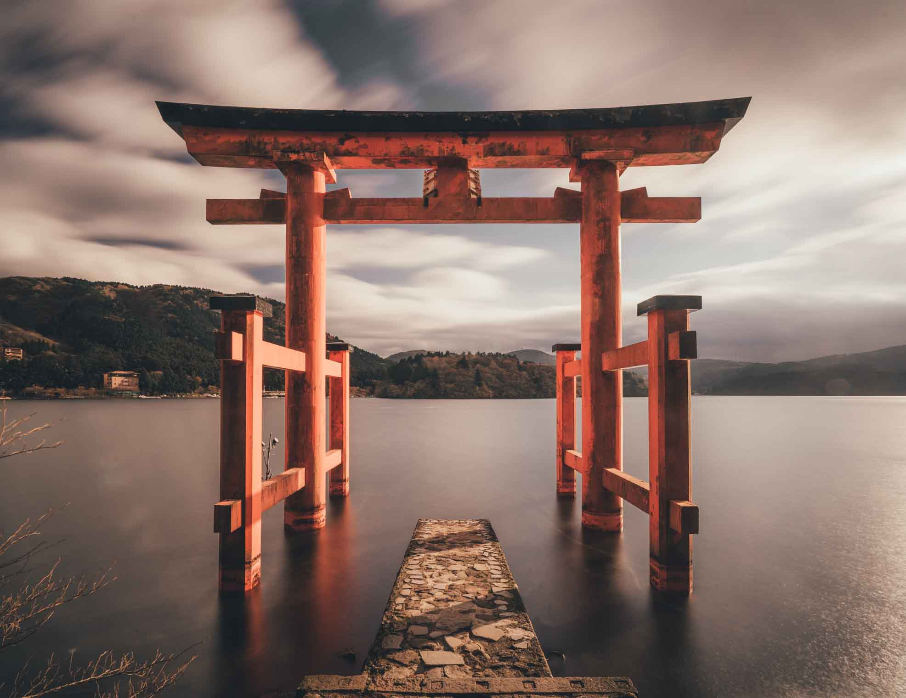

Un pays à l'histoire complexe, aux paysages variés et à la culture vaste et attrayante. Sa croissance économique des années 70 lui a permis de se hisser au rang de 3e puissance économique mondiale !
Aperçu

Les plus belles saisons
Au Japon, les plus belles saisons sont sans conteste le printemps et l'automne. La plupart des saisons s'accompagnent généralement d'un festival dans chaque ville.